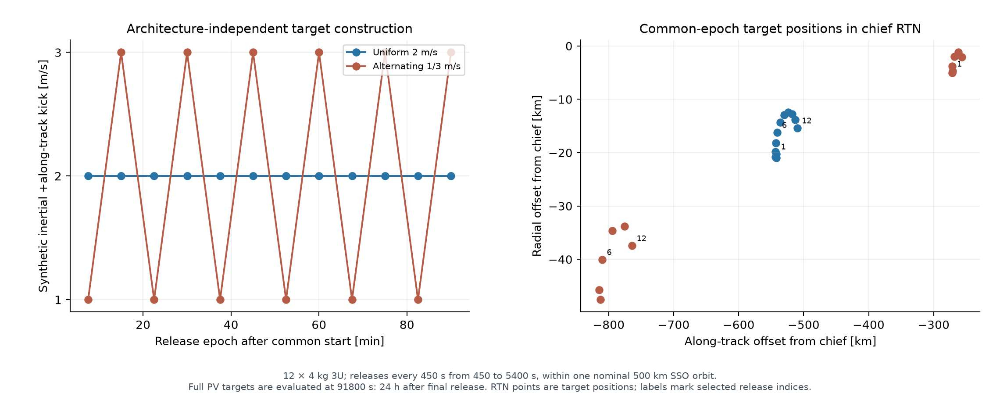
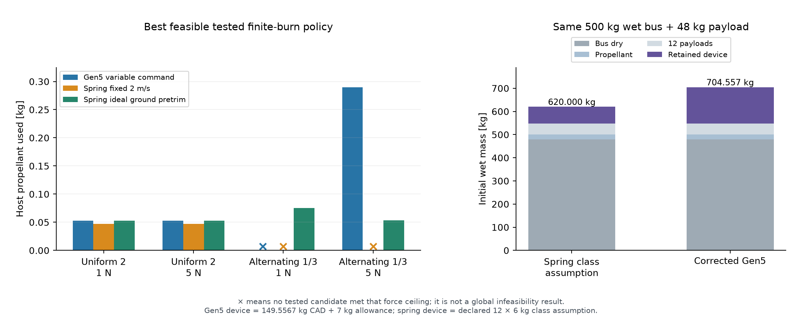
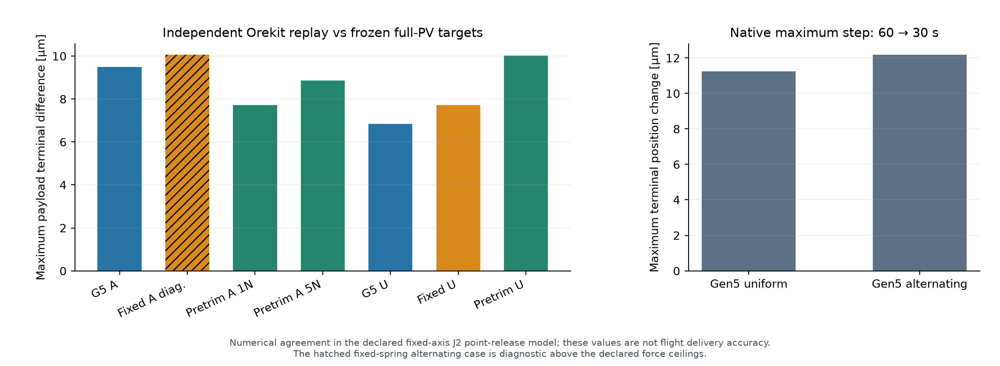

Host assistance is part of delivery.
The same-input comparison carries twelve 4 kg 3U payloads from a nominal 500 km sun-synchronous orbit. Synthetic full-state targets are frozen before either architecture is planned.
Twelve departures. One evaluation epoch.
Twelve releases, every 450 s, within the nominal 5676.978 s orbital period.
24 h after final release. Compare all twelve payloads and retained host at this epoch.
Constant inertial resultant force; 500 kg initial wet bus; Isp 220 s.


The comparator closes the trade.
| Target / authority | ACR1 | Fixed 2 m/s spring | Ground-pretrimmed spring |
|---|---|---|---|
| Uniform 2 / 1 N | 0.052443 | 0.046957 | 0.052443 |
| Uniform 2 / 5 N | 0.052443 | 0.046957 | 0.052443 |
| Alternating 1/3 / 1 N | No tested pass | No tested pass | 0.075002 |
| Alternating 1/3 / 5 N | 0.289874 | No tested pass | 0.053645 |
The ideal ground-pretrimmed spring closes both target families at either authority gate. These preplanned cases establish no Gen5 propellant or initial wet-mass advantage. A failed sampled policy is not a global infeasibility proof.
ACR1 begins at 704.55672 kg against the declared 620 kg spring case, a retained-device penalty of 84.55672 kg. The spring allocation is a class-study assumption of 12 × 6 kg.


A commanded sled speed is one contribution.
Host manoeuvre → pointing → release
The host supplies the planned pre-release state and direction. The launcher adds its coupled release contribution; its retained sled recoil is recomputed at each release. The host then recovers to the common chief trajectory at one orbital period.
Gen5 reserves a 400 s zero-force loading coast for each payload, enclosing the declared 355 s mechanism cycle. Both architectures retain 5 s pre-release and 20 s post-release zero-force guards.
Coast → modeled target state
Each released full six-state is propagated under fixed-axis J2 to the common epoch. Material altitude or plane changes are never attributed to the launcher alone. These are generic-host synthetic delivery studies.
All targets were known before the spring energy table was fixed. The study does not establish a unique inflight-retasking benefit.
Numerical agreement has a precise meaning.


Point masses, fixed-axis J2, constant inertial force and Isp 220 s. Drag, higher gravity, third bodies, attitude, plume allocation, navigation and finite exit geometry are outside the model.
Two, four and twelve.
The separately identified partial-occupancy supplement executes two- and four-payload campaigns using the full retained launcher, the frozen target subsets and the same common evaluation epoch. It adds 28 finite-force candidates and 17 native Orekit replays.
Inspect the comparison figure, conditions and original outputs →